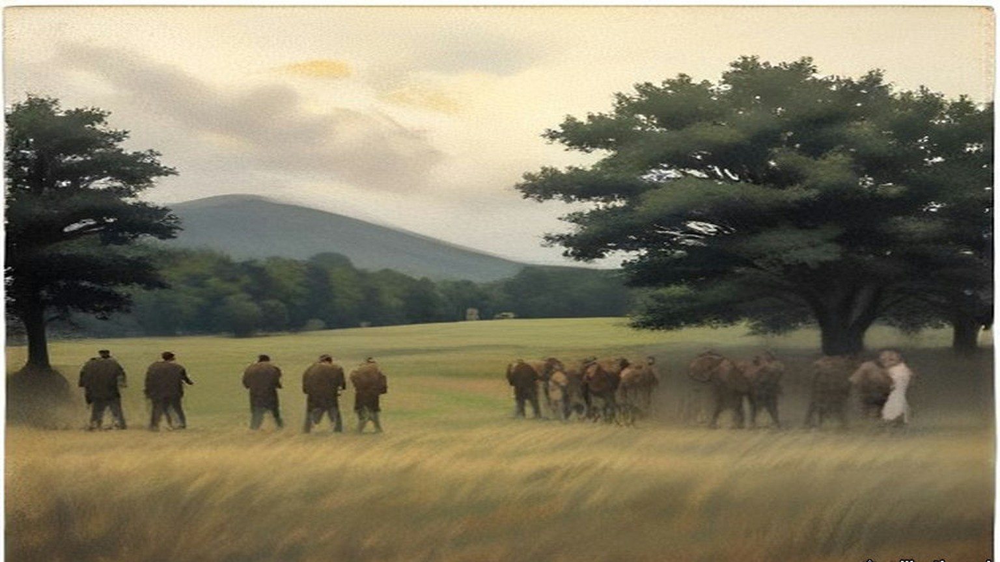
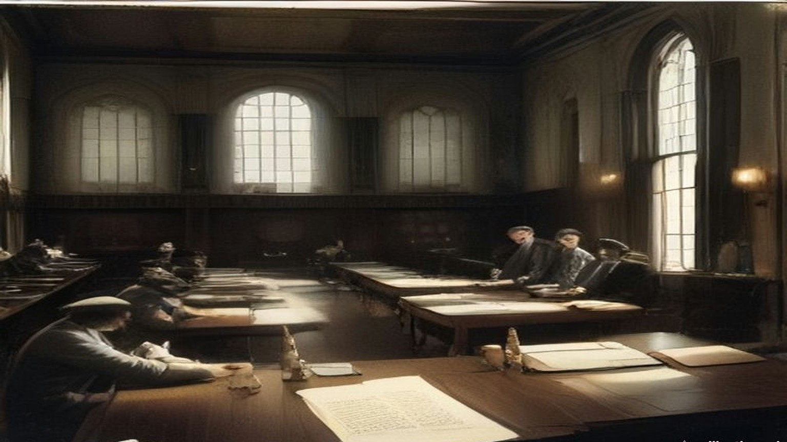
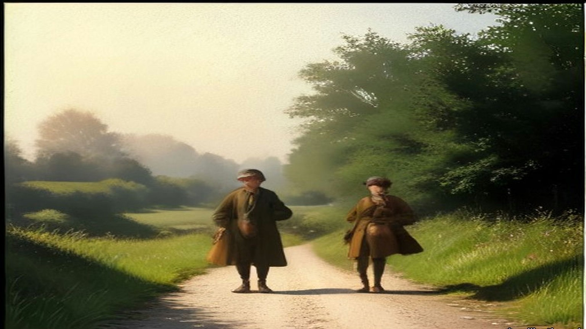
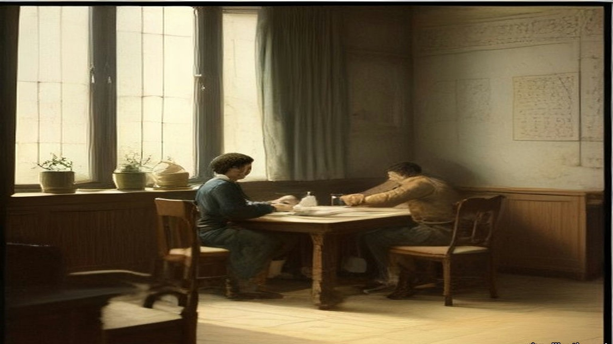
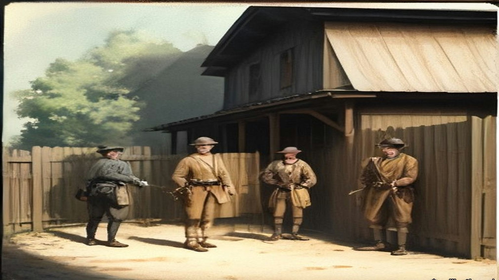
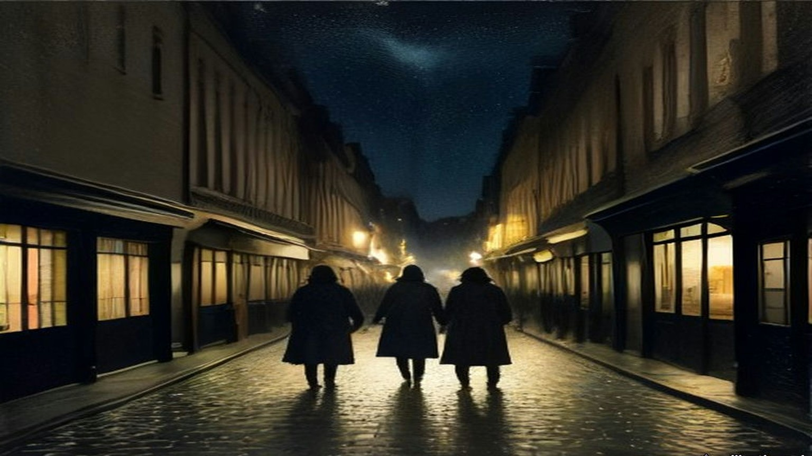
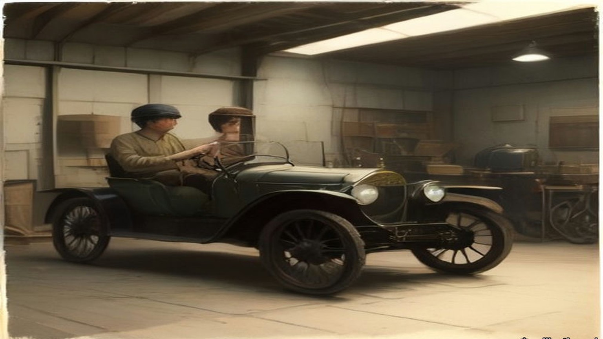

Chapter 19
Thirty Revolvers on the Field, 1920
Fingal, Balbriggan, Westminster, Upper Pembroke Street, Croke Park and Cork, September to December 1920
Joseph Lawless farmed at Saucerstown, near Swords, in the part of north county Dublin that its people called Fingal. In the summer of 1920 he was an officer in the Fingal Brigade, and he spent the season watching lorries. The Black and Tans had their depot at Gormanston Camp, and their convoys went to and fro on the roads past his fields every day. The British military from Collinstown Aerodrome had put a post into Swords House, the big empty residence in the town. Nothing was done about any of it.
The Brigade Commander, Michael Lynch, was a city man. He had taken on the reorganising of Fingal in 1917, he still lived in Dublin, and he came out to preside at Brigade Council meetings that were few and formal. When the officers raised their own idleness at one of them, Lynch told the meeting that Collins had instructed him that no active operation was to be undertaken in Fingal without Collins's specific sanction. Some of them did not believe it. Years afterwards Dan Brophy told Lawless that he had been in Collins's office with dispatches about then, and had passed on the officers' grumbling. Collins said he did not want the British to declare north county Dublin a military area. It would cut the city, and General Headquarters with it, off from the north and west. He wanted the country behind the city quiet, a place where hard-pressed men from the city units could go to rest or get away from pursuit.
Lawless found it galling all the same. Peter White, the Company Commander in Ballyboughal, felt as he did and was less constrained by notions of discipline. One night in the middle of September White went into Balbriggan with a couple of his men, and they shot dead Burke of the R.I.C. and wounded a sergeant.
Balbriggan was about three miles from Gormanston. It was the district headquarters of the R.I.C., and Tans on local pass from the camp came into its public-houses. Later that night, 20 September 1920, lorry loads of them came down on the town and set fire to it. The stocking factory, the town's chief industry, burned to the ground. So did about thirty shops and dwelling houses. The Tans went round firing shots at random, and the people were terrified. A queer individual was seen leading an R.I.C. party to certain houses, among them the houses of James Lawless and John Gibbon. The two men were taken out and shot dead on the spot.
Lawless knew of no special reason why those two had been chosen. The only reason he could think of was the name. A Lawless in Balbriggan could be taken for one of his own family. The man who had walked in front of the police party had been seen before on the roads round Fingal, on foot, dressed as a beggar. The beggars who went round selling studs and bootlaces, or collecting mushrooms and crab apples in season, were known to the country people one by one. This one had turned up suddenly and gave no account of himself that anyone believed. The people called him Jack Straw. After the sack of Balbriggan the story of his walking with the R.I.C. went round, and the Volunteer intelligence officers began to look for him.
On 6 October a woman in Balbriggan sat down to write to a trade union official she knew. "Just a line to let you know we are still alive, but don't know the minute," she wrote. "I would have written before, only we are expecting a raid every night, and you cannot settle yourself to do anything." The Tans had been back. They had pasted bills on the doors and turned people out into the fields for a night. "They are even shooting the dogs in the street. I wonder how it will all end. There comes quite a crowd from all parts to see the ruins."

* * *
House of Commons, Wednesday, 20 October 1920
Arthur Henderson, the member for Widnes, rose for the Labour Party and moved the motion standing in his name:
"That this House regrets the present state of lawlessness in Ireland and the lack of discipline in the armed forces of the Crown, resulting in the death or injury of innocent citizens and the destruction of property; and is of opinion that an independent investigation should at once be instituted into the causes, nature, and extent of reprisals on the part of those whose duty is the maintenance of law and order."
It was a vote of censure, and it held up the Government of Ireland Bill for a few hours. Henderson read figures. In 1917, 349 arrests for political offences; in 1918, 1,107. In the two years together, as far as he could learn, one policeman killed. In 1919, 14,000 armed raids on private dwellings and 25 newspapers suppressed. He had spent a couple of weeks in Ireland early in the year with some of his colleagues. They had reached Thurles one morning after a policeman had been shot there in the night, and the first man they met at the station was a policeman, who told them what had happened and then volunteered that he was going to have a little of his own back that night. The cheers that came when Henderson spoke of the provocation offered by the other side were, he said, about the first cheer since he had risen.
The Chief Secretary for Ireland, Sir Hamar Greenwood, answered him. He came to the forces of the Crown. The Army wore badges of valour from the war. The police had been reinforced from two sources: ex-soldiers who enlisted as ordinary constables, and were coming in at over 300 a week, and ex-officers. "This is called the auxiliary division and is composed entirely of ex-officers, ranking from Brigadier-Generals to subalterns," he said, "and I have yet to find one authenticated case of a member of this auxiliary division being accused of anything but the highest conduct characteristic of them."
He gave cases. One was Ennistymon and Lahinch in county Clare, where four policemen had been killed in an ambush and a fifth hunted down on the road, and where soldiers and police, coming on the bodies within ten minutes, went into the two villages and damaged or destroyed sixteen houses and shops. "I am admitting what is called a reprisal," Greenwood said. A member called out, "And justifying it!" Greenwood said the people of those villages had known of the ambush. "The Irish Republican Army is particularly strong in that area. We have lists of the members. We have the muster roll in that area."
Somebody called "Take Balbriggan?" and he took it. Asquith, the member for Paisley, had compared Balbriggan with a Belgian town in the war. "Has he seen Balbriggan?"
"No," said Asquith.
"I have. I claim to be an authority on Balbriggan." He admitted at the start that the case was one he had every right to regret, "because it did mean a certain break in the splendid discipline of the Irish police." Head Constable Burke had lately been decorated for his gallant defence of a barracks. He and his brother, Sergeant Burke, had gone into a public-house, both unarmed, and had been surrounded by men Greenwood could only call assassins. The Head Constable was shot dead, the sergeant dangerously wounded. Men from two depots miles away heard of it and came in lorries. When they saw the bodies, "they saw red." That night, he said, nineteen houses of Sinn Féiners were destroyed or damaged, four public-houses were destroyed, and one hosiery factory employing 200 hands.
"Two men were also killed," said Lieutenant-Commander Kenworthy, the member for Central Hull.
"And two men were killed."
"Murdered!" said Asquith.
"If the right hon. Gentleman the Member for Paisley gets any satisfaction out of it, I will say 'murdered.'" Greenwood had held the fullest inquiry. "I found that from 100 to 150 men went to Balbriggan determined to revenge the death of a popular comrade shot at and murdered in cold blood. I find it is impossible out of that 150 to find the men who did the deed, who did the burning." He had laid down a still stricter code of discipline and addressed a parade. "But I cannot in my heart of hearts," he said, "condemn in the same way those policemen who lost their heads as I condemn the assassins who provoked this outrage."
On the creameries he gave numbers. Kenworthy had said a hundred were burned. There were 710 in Ireland, Greenwood said, and sixteen had been destroyed and eleven partly destroyed. He had never seen a tittle of evidence that servants of the Crown had done it. As for the economy, the Exchequer's estimated revenue from Ireland for the first six months of the financial year had been very nearly equalled by the actual receipts.
Kenworthy had his own report. In some places, he said, soldiers were acting under officers who told them they had orders to burn certain houses. "In some cases the officers apologise to the inmates, who are usually women, and the soldiers have actually assisted in getting the furniture out of the houses."
Asquith closed for the motion. His information on Balbriggan, he said, came from friends who had been there, not from any Sinn Féin source. A couple of hours after the shooting the Black and Tans had come into the town, taken two men to the police barracks, and then set about arson and looting. In one of the main streets a whole row of poor houses was destroyed. Across the street five cottages lately built by the local authority were burned. "In all, 35 houses were destroyed."
"No, no!" said members.
"Let us have an inquiry." The fires went so fast, he had been told, that women and children barely had time to get out half-clad to the fields. Of the two men taken to the barracks there was not a shadow or tittle of evidence connecting either of them with the shooting of the police. They were taken out while the burning went on and shot in cold blood.
T. P. O'Connor, the member for the Scotland division of Liverpool, added what Greenwood had left out. Some of the men in the raid had been woken out of their beds at half-past ten, hours after the shooting. They had come supplied with lorries and petrol, and O'Connor asked how they could have got them except with the help of officers. The first place they visited in Balbriggan was a public-house, and they got drunk before they went out again. And the two men, he said, by the account he had found in the papers, "were prodded with bayonets before they were murdered."
The House divided. Ayes, 79. Noes, 346. There would be no independent inquiry.

* * *
From Ballybrophy to Phil Shanahan's, Saturday, 20 November 1920
Thomas Ryan was in the Tipperary football team that went up to Dublin on Saturday the 20th to play Dublin at Croke Park the next afternoon. The team was picked from all over the county and came together on the train, and it was not until Ballybrophy that the full complement was aboard. There the Kilkenny train brought in four more of them: Mick Hogan, Jerry Shelly, Dick Lanigan and Seán Brett.
Shortly after the train left Ballybrophy a crowd of soldiers of the Lincolnshire Regiment got on. Some of them went into the carriage where Jacky Brett, another of the players, was sitting with a Father Delahunty from Kilkenny, and passed unseemly remarks. Brett went for them and was knocked down. The priest called out for help. Ryan and the others were in the middle of a penny twenty-five card game and had noticed nothing. They rushed to the carriage, saw what had happened, and saw red. Ryan and Jim Ryan enjoyed themselves immensely playing handball with half a dozen of the soldiers. When they had them all down for the count they picked two of them up and pitched them out through the carriage window.
The whole train was wild for a while, then it calmed. Thinking it over, the players fully expected to be met at Kingsbridge by military and police and arrested. Nobody was waiting. They scattered anyway. The team was booked into Barry's Hotel in Gardiner Place, and instead they divided themselves up among several other hotels.
Hogan and Ryan were the only two Volunteer officers on the team, and they went to Phil Shanahan's. At about nine o'clock that night they heard there was a big job coming off in the morning, and nothing more. D. P. Walsh came in on a mission to collect arms. He took Ryan down to Shanahan's cellar, where there were revolvers and .45 ammunition stored in porter bottles, and asked him to help carry some of it up to Fleming's Hotel in Gardiner Place. They walked one on either side of the street, so that if either was stopped or fired on, the other could fire on the attacker. It was Ryan's first taste of the war in the city. They got there without trouble, and when they came back Ryan volunteered to take part in the morning's work, whatever it was. In between they had gone to confession, and felt fully prepared for whatever turned up.
Somebody in Shanahan's grew uneasy that the two countrymen knew so much. A hush came over the place, and they were told the whole thing was called off or postponed. They went back to their lodgings and went to bed.

* * *
28 Upper Pembroke Street, Sunday, 21 November 1920, nine o'clock
Charles Dalton had been sent to meet a girl who had told a Volunteer about some strange residents in the block of flats where she was a maid. He met her in the Volunteer's home over a shop in Talbot Street. Her name was Maudie. The residents, she said, followed no regular occupation, but did a lot of office work in their flats. Dalton arranged for her to bring him the contents of their waste-paper baskets. In the torn-up papers were notes on the movements of wanted Volunteers, and photographs of wanted men.
He met Maudie for the last time on Saturday evening, the 20th, at their rendezvous. All her boarders were at home, she said, except two who were moving that night to Upper Mount Street. Dalton reported it to Dick McKee at Brigade headquarters. McKee had already briefed every party for the morning, and he made up a patch unit for Upper Mount Street. Before curfew Dalton went to Harcourt Street to meet the officer who would go with him to 28 and 29 Upper Pembroke Street. It was Paddy Flanagan of the 3rd Battalion. They fixed a place to meet. Dalton slept that night where he always slept while on the run, in the dugout in the unoccupied part of Summerhill Dispensary, and there were several other men there who were going into action in the morning.
At Upper Pembroke Street he found Flanagan and a few others. They had no keys to the hall doors, and they went over the arrangements again. At nine o'clock, the hour fixed, the hall door was open and the porter was on the steps shaking mats.
It was a double house, with a separate staircase on each side, and a party went up each. Dalton went with Flanagan and two others to a room at the top of the house where two officers lived, one of them Lieutenant Dowling. They knocked and pushed the door open. The two men were awake in bed. They were told to stand up, and they were shot. Dalton said he wanted to search the room.
"Search be damned! Get out of here."
They went down to the hall. A number of officers had been brought out of their rooms and lined up against the side of the staircase that led toward the basement. The party's arrival at that level was the signal for a volley. Six or seven men lived at the address, Dalton said afterwards, all holding British commissions, and all were shot. A few lived. The papers taken that morning went to Mrs. Byrne's house in North Richmond Street, and Dalton carried them on to the intelligence office in Crow Street.
Detective McNamara of the Castle told him afterwards what he had seen there. Cabs and side-cars and every kind of conveyance had brought people into the Castle yard, men who had been working quietly against the I.R.A. and who now came in for protection.
On Monday the Chief Secretary read the House of Commons the telegrams from Dublin "just as I have received them." The sixth of them was Case F.
"Residence of Mrs. Gray was raided at nine this morning by about 20 men, some of whom came on bicycles. The house consists of several flats." Mrs. Gray and her maid had gone from room to room afterwards. Major Dowling of the Grenadier Guards was dead at his bedroom door. Captain Price of the Royal Engineers was dead in the room next door. Captain Kenlyside's wife had struggled with the men, and he was wounded in the arm. Colonel Woodcock, Colonel Montgomery and Mr. Murray of the Royal Scots were wounded. "A lady resident in the house went from room to room seeking help, and in every room found only dead, dying, or wounded men."

* * *
Croke Park, Sunday afternoon, 21 November 1920
Phil Shanahan called at the lodgings in the morning and told them. Ryan and Hogan walked across the town and went round Mount Street and the other places where the shooting had been. There was nothing to see. About eleven a message came from Dan Breen, who was staying somewhere in Phibsborough. Breen was going back to Tipperary soon and would be glad of Ryan's company. He also thought it very inadvisable for Ryan to show himself at Croke Park that day. Ryan went to Croke Park and took his place in the team.
The match had been going about ten minutes. Play was round the Dublin goal. A penalty was given against Dublin, and Ryan was about to take the free kick. An aeroplane flew over and fired a Verey light. Then came a burst of machine-gun and rifle fire.
The crowd broke at once. The players ran off the field in among the spectators on the sideline, all but six of them, who threw themselves flat on the grass. Hogan and Ryan were two of the six. The other four were Dublin men, Volunteers too, as far as Ryan knew, and he put it down to their training that they lay down instead of running. From where they lay they could see sparks flying off the railway embankment wall where the bullets struck it, and people rolling down the embankment who had been hit.
Two of the six got up and ran for the paling round the pitch on the Hill Sixty side, which was nearest. The others followed one by one. Hogan was hit while running from the field to the paling. Ryan and Josie Sinnott were the last off. Ryan went to Hogan and tried to lift him. The blood was spurting from a wound in his back.
"Jesus, Mary and Joseph! I am done!"
He died there. Ryan's hands and jersey were covered with his blood.
The Auxiliaries had not come onto the pitch. They were all round the ground, herding people into groups with their hands up and searching them, and here and there one of them kept firing in every direction. As Ryan reached the paling he saw an Auxiliary push a round into the breech of his rifle and look his way. He dropped. A youngster near him fell. He jumped the paling into the crowd.
He was the only man on the Tipperary team who wore the tricolour on his stockings and knickers, and he knew it marked him. He ran across Hill Sixty and got out over the wall, and into a house on Clonliffe Road. The house was soon surrounded, and the door forced in. An old man in the hall said something to them and was knocked down with the butt of a revolver. One of them saw Ryan.
"There is one of the Tipperary assassins! Take him out and shoot him!"
Two of them had bayonets drawn. They knocked him down and ripped his stockings and knickers off him with the bayonets until he was naked. An officer came and told them to bring him back to Croke Park, where he would be shot with the rest of the team. Ryan did not take it for mercy. He thought the officer wanted to be tidy and have all the shooting done in one place.
They marched him back along the road with nothing on. People were still jumping from the wall. One man had come down on the spikes of an iron railing. A spike was through his thigh, and others were climbing over the railing on his body. A man standing with his girl, his hands up, took pity on Ryan's nakedness and threw him a coat, and got the butt of a rifle for it. Ryan was not let keep the coat. Inside the gate a priest was ministering to the wounded and dying, holding the Blessed Sacrament aloft, and a drunken Tan came up behind and knocked him flat with a revolver butt.
The people in the ground had had their hands up for about twenty minutes by then, and some were falling down from the strain. Ryan was put against the railway wall with the rest of the team, and a firing party stood in front of them while the crowd was searched. A military officer told them that if there was any shooting or resistance during the search, he had orders to shoot two of them for each incident. Their clothes in the dressing-room were searched for documents and arms. Nothing was found. The searchers took every penny that was in their pockets.
That night an ex-officer of the British Army, Jack Kavanagh of Seville Place, divided £50 among the team so that they could live and get home. The Dublin players took them into their own houses round Seville Place and O'Toole's parish. Ryan stayed with Stephen Sinnott. In the night there was a raid a few doors away and a man was taken out and shot. Ryan, Tommy O'Connor and Sinnott went out into the yard and buried themselves in a heap of manure until the noise had died away. The raiders never came to Sinnott's door. The papers next day mentioned a naked player. That had been Ryan.

* * *
House of Commons, Monday 22 November to Thursday 9 December 1920
Joseph Devlin, the member for the Falls division of Belfast, sat through the Chief Secretary's telegrams on Monday afternoon. Greenwood had begun by saying, "We are fighting an organised band of paid assassins," and he read the details of the morning in Dublin, house by house, from Case A in Lower Baggot Street to Case H in the Gresham Hotel. "There have been fourteen deaths." Then the Prime Minister answered a question about stronger powers.
Devlin got up. He wanted to know why, when the Prime Minister and the Chief Secretary were asked to recite everything that had happened in Dublin on Sunday, the House had heard nothing about soldiers at a football match. "At which ten people were killed."
"Sit down!"
"I will not sit down." He wanted to know why the House had not been told of the rush of soldiers onto a football field with 15,000 people on it, the indiscriminate shooting, and ten men killed.
Greenwood said he had never been asked. Devlin rose again to put more questions, against loud shouts of "Sit down!" Grave disorder broke out. The Speaker suspended the sitting at five minutes past four, and the public galleries were closed.
When the Speaker came back at twenty past four, Major Molson rose first. "I wish to apologise to the hon. Member for the Falls Division," he said, "to you Mr. Speaker, and to the House. I am afraid that I allowed my feelings to get the better of myself, and I forgot myself." Devlin accepted it and said he had no personal feeling in the matter. His complaint, he said, was with members who took order out of the Speaker's hands and howled down a minority. T. P. O'Connor had sent the Chief Secretary notice on Sunday that he would ask for everything that had happened in Ireland over the week-end. Devlin asked again for the whole story.
Greenwood now read the answer from Dublin. "The authorities had reason to believe that Sinn Fein gunmen came into Dublin on Sunday under the guise of attending a hurling match between Dublin and Tipperary, but really to carry out the Sunday morning's murders." A mixed force of military, R.I.C. and police had surrounded the playing fields to search for arms. "This force was fired upon and they fired back, killing 10 and wounding others. About 3,000 men were searched. Thirty revolvers and other firearms were found on the field. I regret to say that a woman and a man were crushed to death in the crowd."
"Is that the total casualty list?" asked Kenworthy.
"Ten killed, a number wounded and a man and woman crushed to death in the crowd."
Devlin asked whether a single incriminating document had been found on any of the 3,000. Members shouted, "Revolvers!" Before the exchange ended Jeremiah MacVeagh had called out "Begin with Carson," and then "he began," and Sir Edward Carson had answered him across the floor, "You are a liar!" The Speaker said he had not heard it.
On Tuesday Kenworthy asked by private notice about the killing and wounding of some eighty civilians at Croke Park, how many volleys had been fired, for how long, and whether there would be an inquiry. Greenwood read a fuller account, "compiled from report made by police and military, after very careful investigation."
The round-up had been carried out "according to a preconcerted plan." Once the military had surrounded the field, an officer was to tell the crowd "through a megaphone" that a search was to be made by the police "and that no anxiety need be felt by innocent persons." Before the cordon was complete, civilians posted to watch the approaches saw the police coming. The police were fired on from two corners of the field. Men in the grandstand rose and "fired three quick shots with revolvers into the air. Of this there is indisputable evidence." The crowd stampeded, "mostly to one side of the field, where a corrugated iron railing was the only barrier to be surmounted. Through its fall a number of people were crushed." Armed pickets outside kept up a fire on the police, who returned it. "The firing lasted not more than three minutes. About 30 revolvers, thrown away by men who had formed part of the spectators, were picked up on the ground. Twelve persons lost their lives, 11 were injured seriously enough to warrant their detention in hospital, and about 50 persons sustained slight hurt." The responsibility rested "entirely upon those assassins."
Kenworthy asked whether Greenwood knew that many eye-witnesses were ready to swear that no shots had been fired at the police, and that the so-called pickets were men selling tickets outside the field. Mr. E. Kelly asked at what stage it had become necessary to turn a machine gun on the people, and how a little boy of ten came to be bayoneted to death. Greenwood was not aware that any machine guns were used, nor did he believe that a boy of ten was bayoneted. Devlin asked why, if revolvers had been taken from people at Croke Park, nobody in possession of one had been arrested. MacVeagh asked whether any shots had been fired from the aeroplane that was hovering over the ground. Greenwood asked them to put those questions down.
On 2 December Mr. Pennefather asked about the pastoral letter of Cardinal Logue, which said that "a general indiscriminate massacre of innocent and inoffensive victims was perpetrated at Croke Park, Dublin, last Sunday week by forces of the Crown." Denis Henry, the Attorney-General for Ireland, said the passage represented "a complete misunderstanding of what took place." MacVeagh asked if he was aware that "English and American newspaper correspondents who were present flatly contradict the statement." On 9 December, in a written answer, Greenwood agreed that his attention had been drawn to an observer's statement that the attack, in which fifteen people were killed, was made without provocation or warning.
Between Monday and Tuesday the number killed at Croke Park had gone, in the Chief Secretary's own answers, from ten shot and two crushed to twelve.
* * *
Balbriggan and Croke Park, December 1920
William Lunn, a Labour member of the Commons, crossed to Dublin on Tuesday, 30 November, with the Labour Party's Commission to Ireland. The Commons had refused an independent inquiry, so the party had set up its own. Henderson was its chairman. With him and Lunn went J. Lawson, the party's chairman A. G. Cameron, F. W. Jowett, J. Bromley and W. Adamson, with Brigadier-General C. B. Thomson as military adviser and Captain C. W. Kendall as legal adviser. Greenwood gave them every help. They were issued permits to travel by motor anywhere at any hour.
They took evidence at the Shelbourne Hotel. They went out to Balbriggan and saw the shell of the hosiery works of Deedes, Templer and Company, which belonged to an entirely English firm and had employed 109 people inside and at least 120 outworkers. Smith and Company's factory, the other hosiery works in the town, had been saved only because a local man appealed to the policemen who said they were going to burn it. In one long street almost every house was burnt or had its windows broken. On the other side were the newer houses put up by the local authority, now in ruins. Witnesses told them in the Town Hall that the men had waved their caps and cheered at the fires, and had looted drink, and that a local policeman who said it was "going too far" was sworn at when he asked them to stop.
The Commission wrote down what else the fields had cost. Besides the two men shot, two women had died from the effects of exposure, two women had miscarried as a result of the night, and four babies who were sick with measles had been carried out to the fields and had died of it. For days afterwards the town emptied at nightfall, because the people were afraid of another attack.
At Croke Park they reconstructed the scene of 21 November and took evidence on the ground. Not one witness supported Greenwood's statement that the police had been fired on from two corners of the field. The evidence was that the police began firing almost as soon as their lorries stopped. Rifle fire went down Russell Street, the way the lorries had come, and over the turnstile entrance at the spectators inside. A man was mortally wounded about half way down Russell Street. A young woman was shot dead beside her fiancé near the centre line of the field. A small boy who had climbed a tree just inside the turnstiles was brought down wounded. The Commission could neither confirm nor disprove the signal shots from the stand. It asked why, if pickets and gunmen had kept up a fire on the police, there had been no casualties among the police, and no armed prisoners taken. By the evidence given to it, the R.I.C. and Auxiliaries had done the shooting, and the soldiers had taken no part.
The Commission's report was printed in London in 1921 and sold at two shillings, or two and threepence post free. It gave its verdict on Croke Park as "a ghastly tragedy resulting from official errors of judgment and incompetence," and Balbriggan as "a clear example of a 'reprisal' where men wearing the uniform of the British Crown broke out of control and took a savage revenge upon the whole population of the town."
On 29 December Lunn spoke at the special Labour Party conference on Ireland. He told the delegates how Greenwood, in the Commons, had pointed across at Asquith and asked whether he had been to Balbriggan. Lunn had it, he said, on the best authority that Sir Hamar Greenwood had gone through Balbriggan at more than twenty miles an hour in a motor, on his way to address recruits three miles away.

* * *
Cork, Saturday night, 11 December 1920
Captain Alfred Hutson, superintendent of the Cork fire brigade, had come on duty at seven on Saturday morning. At about ten that night a call came in about a fire at Dillon's Cross, where there had been an ambush that day. At half past ten he got the call to A. Grant and Company in Patrick Street. The fire had taken hold when he reached it, and the flames were coming through the roof. He got three lines of hose to work, one in Mutton Lane and two in Market Lane, the passages on either side. With a good supply of water they kept the fire to Grant's, and saved Hackett's and Haynes's, the jewellers next door, with slight damage. Behind Grant's was the Market, a building mostly of timber. If it caught he would have a conflagration on his hands. Apart from a few small outbreaks in its roof, they saved it.
At about half past eleven the Town Clerk sent word that the Munster Arcade was on fire. Hutson sent every man and appliance he could spare. Soon after came word of Cash's. He shortened the hose at Mutton Lane and sent all the stand-pipes, hose and men he had. He found the Munster Arcade and Cash's both alight from end to end, beyond saving, and the fire running into the next buildings. They brought every hydrant and main they could reach to bear, chose the points where the fire could be checked, and fought there. The General Post Office brought out its own fire appliances, which did good work around Winthrop Street and Robert Street. Then he found that the new hose had been cut in several places in the street and was no further use.
About four in the morning he was told that the Municipal Buildings were on fire. There was a practical man in charge there, with half a dozen men, who had put out fires in the City Hall three times already, and Hutson trusted him to do it again. The incendiaries drove his men out of the building, and out of the Carnegie Free Library beside it.
When he got the Dillon's Cross call, Hutson had telephoned Victoria Barracks and asked the military to bring their hose reel and stand-pipes down to the barrack gate, because he was called away to Grant's. They took no notice. At Patrick Street the military brought no fire appliances at all, though they had done so at nearly every fire until the last few months, and before these incendiary fires had often been a real help. By eight on Sunday morning the fires were partly under control, and he kept at it in the streets off Patrick Street until half past ten. He had been on duty since seven the morning before.
He wrote his report to the Lord Mayor. He had no hesitation in saying that every one of the fires was an incendiary fire, and that petrol, or some such spirit, had been used in all of them, and explosives in some. People had been seen going in and out of buildings after breaking an entrance. At some fires he attended, the people had been brought out of their houses and held in the by-lanes until the fire had a good hold. "I have some of the petrol tins left behind in my possession."
On Monday the 13th Greenwood told the Commons that "the best inquiry and the most impartial" would be the one "made by the General Officer Commanding on the spot." Answering Kenworthy, he said: "There is no evidence of hoses being cut or of the forces of the Crown being responsible for these outrages at all." General Strickland announced his military court of inquiry on the 16th, for the 18th. Maurice Healy, solicitor for the Cork Chamber of Commerce and Shipping and the Cork Employers' Federation, asked to attend and offer evidence, and was told that lawyers would not be admitted and that the inquiry was private. When he asked for that in writing, the answer came on the 21st: "As the court of inquiry has now closed, your question does not arise." The Chamber of Commerce telegraphed the Chief Secretary its demand that all the damage be made good out of Government funds.
On 16 February 1921, T. P. O'Connor asked whether the Strickland Report would be produced. Greenwood said it would not. It was not the usual course to publish confidential reports of that kind. Kenworthy asked about the English insurance companies, with their big liabilities in Cork, and about the people whose property was gone and who had no insurance. "There is no foundation," Greenwood said, "for the statement that £3,000,000 or anything like that sum represents the amount of damage done." The damage would be assessed in the usual way, under the Criminal Injuries Act, by the county court judge in Cork.

Mini-glossary
- Sinn Fein (1 occurrences in this chapter): Irish nationalist movement founded by Arthur Griffith in 1905 ('Ourselves Alone'), cited by Gandhi in 1907 as a parallel to Indian Swadeshi.
Important names
- Begin, Menachem (1 mentions in this chapter): Commander of the revisionist Zionist underground organization Irgun Zvai Leumi in Mandate Palestine.
- Carson, Edward (2 mentions in this chapter): Dublin-born barrister, Solicitor-General, and leader of the Ulster Unionist Council.
- Collins, Michael (4 mentions in this chapter): Director of Intelligence for the IRA, signatory of the 1921 Anglo-Irish Treaty, and Chairman of the Provisional Government.
- Russell, Lord John (2 mentions in this chapter): British Whig Prime Minister during the height of the Irish Famine (1846–1852).
Sources
- Bureau of Military History, WS 1,043, Joseph V. Lawless (militaryarchives.ie, BMH.WS1043.pdf, via the Internet Archive). Statement pp. 317 to 319. Used for: Michael Lynch; Collins's instruction that nothing be done in Fingal without his sanction, and Dan Brophy's later account of why; Gormanston convoys and the post at Swords House; Peter White, Company Commander in Ballyboughal, and the shooting in Balbriggan "in the middle of September" of "District Inspector Burke" and a sergeant; 20 September 1920; the stocking factory and "about thirty shops and dwelling houses"; James Lawless and John Gibbon; Lawless's thought about the name; "Jack Straw."
- Report of the Labour Commission to Ireland (London: The Labour Party, 1921; Caledonian Press; price 2s., post free 2s. 3d.), Internet Archive, reportoflabourco00labouoft (PDF and text). Used for: the members and advisers; departure on Tuesday 30 November; permits from the Chief Secretary; evidence at the Shelbourne; the visits to Balbriggan and Croke Park (p. 6); the Balbriggan hosiery works, "entirely English company," 109 employees and at least 120 outworkers, the second factory saved (p. 17); Balbriggan, caps waved, looted drink, "going too far," the deaths of women and babies, "a clear example of a 'reprisal'" (pp. 38 to 39); Croke Park, the evidence on Russell Street, the turnstiles, the young woman at her fiancé's side, the boy in the tree, the signal shots, R.I.C. and Auxiliaries, "a ghastly tragedy" (pp. 40 to 42); Cork (pp. 35 to 38, used only for the date of the fires); the letter from a worker's wife in Balbriggan, dated October 6, 1920 (appendix, p. 87); Lunn's speech at the Special Labour Party Conference of 29 December 1920 (p. 112).
- Bureau of Military History, WS 783, Lieutenant-Colonel Thomas Ryan (militaryarchives.ie, BMH.WS0783.pdf, via the Internet Archive). Statement pp. 30 to 38. Used for the train, Ballybrophy, the Lincolnshire Regiment, Barry's Hotel, Phil Shanahan's, D. P. Walsh and the porter bottles, Fleming's Hotel, confession, Breen's message, the match, the aeroplane and "a Verey light signal," the six on the ground, Hogan's death and words, Clonliffe Road, the bayonets, the man on the railing, the priest, the railway wall, the money taken, Jack Kavanagh's £50, Stephen Sinnott's yard, "a naked player."
- Bureau of Military History, WS 434, Charles Dalton (militaryarchives.ie, BMH.WS0434.pdf, via the Internet Archive). Statement pp. 18 to 21. Used for Maudie, the waste-paper baskets, Upper Mount Street, McKee's patch unit, Summerhill Dispensary, Paddy Flanagan, the porter shaking mats, the top room, "Search be damned! Get out of here," the volley in the hall, Mrs. Byrne's and Crow Street, McNamara's account of the Castle.
- House of Commons Debates, 20 October 1920, vol. 133, cc925–1039, "Vote of Censure Proposed": Henderson (cc925–928), Greenwood (cc936–950), Kenworthy, Asquith (cc977–979), O'Connor (cc1013–1015), division 79 to 346. https://api.parliament.uk/historic-hansard/commons/1920/oct/20/vote-of-censure-proposed
- House of Commons Debates, 22 November 1920, vol. 135, cc34–8, "Murder of Officers, Dublin" (the telegrams, Case F) and cc38–43, "Murder Conspiracy" (Devlin, the suspension, Molson, the Dublin answer on Croke Park, Carson and MacVeagh). https://api.parliament.uk/historic-hansard/commons/1920/nov/22/murder-of-officers-dublin and /murder-conspiracy
- House of Commons Debates, 23 November 1920, vol. 135, cc199–202, "Croke Park, Dublin." https://api.parliament.uk/historic-hansard/commons/1920/nov/23/croke-park-dublin
- House of Commons Debates, 2 December 1920, vol. 135, cc1419–20, "Croke Park, Dublin (Shooting)," and Written Answers, 9 December 1920, vol. 135, c2447W, "Croke Park, Dublin." https://api.parliament.uk/historic-hansard/commons/1920/dec/02/croke-park-dublin-shooting and https://api.parliament.uk/historic-hansard/written_answers/1920/dec/09/croke-park-dublin
- Who Burnt Cork City? (Dublin: Irish Labour Party and Trade Union Congress, January 1921; price sixpence), Internet Archive, whoburntcorkcity00dubl (PDF and text). Used for Captain Alfred J. Hutson's report to the Lord Mayor (pp. 29 to 30); Greenwood's words of 13 December on the inquiry, and his answer to Kenworthy on the hoses, as quoted there; the military inquiry, Maurice Healy, and "As the court of inquiry has now closed" (p. 10); the Chamber of Commerce telegram.
- House of Commons Debates, 16 February 1921, vol. 138, cc90–2, "Burnings, Cork." https://api.parliament.uk/historic-hansard/commons/1921/feb/16/burnings-cork